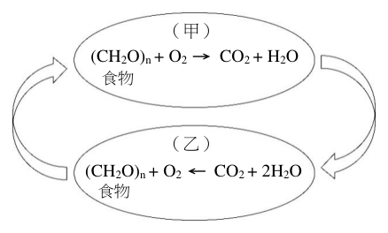
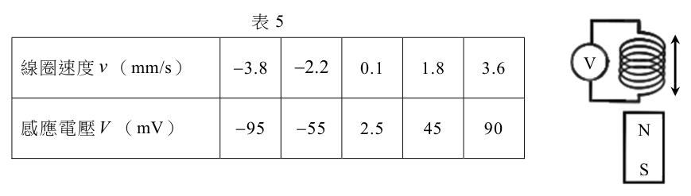

學科能力測驗自然歷屆試題
開卷有益收錄學科能力測驗「自然」民國 111–115 年的歷屆試題，共 5 份考卷、288 題，其中 288 題附有逐題詳解。每一份考卷都有獨立頁面，可以整卷看題目與答案，也可以直接線上作答。
線上練習 自然 →
本科概況
| 科目 | 自然（學科能力測驗） |
|---|
| 題數 | 288 題 |
|---|
| 考卷份數 | 5 份 |
|---|
| 涵蓋年份 | 民國 111–115 年 |
|---|
| 詳解 | 288 題（100%） |
|---|
| 資料來源 | 大考中心 學測歷年試題（依著作權法 §9，考試試題不受著作權保護） |
|---|
| 費用 | 免費，不需註冊，無廣告 |
|---|
物理、化學、生物、地科綜合，重圖表判讀與探究實作。
歷年考卷（5 份）
點任一年度可看整份試題與標準答案。
題目長什麼樣
以下自本科題庫抽 5 題示例，完整題目請看上方各年度考卷。
第 1 題
陽光從太陽發射傳遞至地球大約需時 500 秒，又已知月球與地球的平均距離約為 0.0025 天文單位，試問登陸月球的太空船將資訊透過無線電訊號傳達地球大約需時多少秒？
- （A）0.001
- （B）0.1
- （C）1
- （D）10
- （E）100
答案：（C）
詳解與考點
正解：本題採比例法，因無線電訊號與陽光同為電磁波，傳播速度相同；已知 1 天文單位對應 500 秒，即可直接換算月地距離。月球距地球＝0.0025 天文單位。傳播時間＝0.0025×500 秒＝1.25 秒。1.25 秒約為 1 秒，故 C 為正解。
A：0.001 秒把 0.0025 天文單位的比例縮得過小，未正確計算 0.0025×500=1.25。
B：0.1 秒仍小於正確的 1.25 秒一個數量級，比例換算錯誤。
D：10 秒大於正確的 1.25 秒，將比例換算放大。
E：100 秒遠大於正確的 1.25 秒，未依 0.0025 的距離比例縮短傳播時間。
本題考點：電磁波傳播——無線電與可見光皆以光速傳播；比例計算——距離縮為 0.0025 倍時，時間也縮為 0.0025 倍，即 500×0.0025=1.25 秒。
第 2 題（多選）
圖 1 為一個封閉生態系統之示意圖，由甲及乙兩個子系統構成。圖中的子系統之一表示植物供給人食物、氧氣及淨水，另一個子系統表示人供給植物二氧化碳及代謝水，並消耗食物，因而達成此系統之平衡。有關此系統圖所表達之資訊，下列哪些正確？（應選 2 項）

- （A）甲子系統之示意為光合作用
- （B）乙子系統中的 \(\mathrm{O_2}\) 是由 \(\mathrm{CO_2}\) 分解而來
- （C）乙子系統在植物細胞葉綠體中進行
- （D）甲子系統內箭號右側可加上「代謝能量」之輸出
- （E）乙子系統表示光合作用，可加上「太陽熱能」的輸入
答案：（C）（D）
詳解與考點
正解：依物質流向辨認兩個子系統：人消耗植物供給的食物與氧氣，產生二氧化碳與代謝水；植物則利用二氧化碳與水製造食物與氧氣。依圖中箭號可判定甲為呼吸作用、乙為光合作用。C：乙為光合作用，進行於植物細胞的葉綠體，正確。D：甲為呼吸作用，分解食物時釋出代謝能量，箭號右側可加上「代謝能量」輸出，正確，故答案為 C、D。
A：甲的方向是食物與氧氣轉為二氧化碳、水並釋出能量，這是呼吸作用而非光合作用，A 錯誤。
B：光合作用釋出的 O2 來自 H2O 的分解，不是 CO2 分解，B 錯誤。
E：乙雖為光合作用，但其能量來源是太陽光能，不是太陽熱能，E 錯誤。
本題考點：光合作用與呼吸作用——光合作用為 CO2+H2O 在光能下形成有機物與 O2，發生於葉綠體；呼吸作用分解有機物並消耗 O2，產生 CO2、H2O 與代謝能量；氧氣來源要辨明為水而非二氧化碳。
第 2 題（多選）
學者對甲乙兩葉菜類作物（栽種後約 2-3 個月可採收）進行在不同溫度下光合作用效率的研究，所得結果如圖 2。圖 3 是某地的全年氣溫變化圖。根據這些資訊，僅考慮溫度與光合作用的關係，下列哪些推論正確？（應選 2 項）

- （A）甲較乙適合於山地全年栽種
- （B）若將乙種植於平地，則夏季較冬季所需栽種到收成時間應較短
- （C）相較於山地，平地更適合栽種甲
- （D）於平地，乙在冬天會比夏天消耗較多二氧化碳
- （E）於平地，甲在冬天會比夏天消耗較多二氧化碳
答案：（C）（D）
詳解與考點
正解：官方答案為 CD；惟本筆輸入未保留圖 2 的效率曲線與圖 3 的氣溫資料，無法只由現有文字獨立覆核圖值。判斷方法是把圖 2 的效率—溫度曲線對照圖 3 的平地、山地各季氣溫。C：原詳解記錄甲的最適溫約為 15-20℃，平地全年氣溫多落在其高效率區，因此平地較山地適合栽種甲，C 為官方正解。D：原詳解記錄乙的最適溫偏低，平地冬季較接近高效率區，夏季高溫反使效率下降；光合作用較旺盛時消耗較多二氧化碳，因此乙在平地冬天消耗的二氧化碳較夏天多，D 為官方正解。
A：依原圖示判讀，山地冬季氣溫過低；不能因部分季節適合便推論甲可全年栽種，A 錯誤。
B：依原圖示判讀，平地夏季高溫超過乙的最適溫，光合作用效率下降，因此不能推論夏季從栽種到收成的時間較冬季短，B 錯誤。
E：依原圖示的甲效率曲線與平地季節氣溫，甲在冬天並非比夏天消耗較多二氧化碳，E 錯誤。
本題考點：光合作用效率曲線——先找作物最適溫，再比對各地各季溫度是否落在高效率區；二氧化碳消耗——其他條件相同時，光合作用效率較高代表固碳較多；「全年」判斷——須逐季檢查是否皆符合條件。
第 3 題
新聞曾報導在地球南極大陸發現來自火星的隕石，科學家何以推測該隕石來自火星？
- （A）已經有載人太空船登陸火星，並曾攜回火星岩石
- （B）太陽系早期火星與地球曾發生碰撞，可判斷當時有大量火星岩石掉落到地球
- （C）經過化學分析，隕石中的元素同位素比例符合火星的元素同位素比例
- （D）該隕石含有大量氧化鐵，呈現暗紅色
- （E）該隕石外觀焦黑，有火燒的痕跡
答案：（C）
詳解與考點
正解：判定隕石來源需要具有鑑別性的可比對證據，最關鍵的是元素同位素比例。C：經化學分析後，若隕石中元素的同位素比例符合火星的元素同位素比例，便可支持該隕石來自火星的推論，故 C 為正解。
A：人類尚無載人太空船登陸火星，更未由載人任務攜回火星岩石，不能作為判定依據。
B：太陽系早期的行星碰撞假說即使可能造成岩石拋射，也無法精確辨認某一顆隕石的來源。
D：氧化鐵可呈暗紅色，但地球上的赤鐵礦也有此特性，不具火星專屬性。它看起來對，是因為火星常被稱為紅色星球，但顏色只能提供聯想，不能作為來源鑑定證據。
E：外觀焦黑是隕石穿越大氣層受熱的常見痕跡，其他來源的隕石也可能具有，沒有鑑別效力。
本題考點：科學證據判讀——判定樣本來源要選可量測、可比對且具鑑別性的證據；同位素比例判準——樣本的元素同位素比例符合特定天體的特徵時，可支持來源推論。延伸研究可比對火星大氣或地殼資料中的氧同位素、氮同位素與稀有氣體成分，但本題只以選項所述的元素同位素比例作為判斷依據。
第 1 題
已知此颱風在 21 日 14 時的暴風半徑為 180 公里，如白色圓圈所示。試以預測路徑估算自 21 日 14 時至 22 日 02 時之間，颱風移動的平均時速量值約多少公里？

- （A）5
- （B）10
- （C）20
- （D）30
- （E）40
答案：（B）
詳解與考點
正解：題幹要求用預測路徑估算平均時速，方法是先以暴風半徑換算位移，再除以時間。白色圓圈半徑為 180 公里，所以直徑=2×180=360 公里；由圖比較，21 日 14 時至 22 日 02 時的直線距離約為圓圈直徑的 1/3，因此位移量值約=360×1/3=120 公里。時間從 21 日 14 時到 22 日 02 時為 10+2=12 小時。平均時速量值=120÷12=10 公里／小時，B 為正解。
A：若選 5，12 小時的位移會是 5×12=60 公里，僅約圓圈直徑的 1/6，低估圖上的兩點距離，A 錯誤。
C：若選 20，12 小時的位移會是 20×12=240 公里，約為圓圈直徑的 2/3，高估圖上的距離；也可能是把 12 小時誤算為 6 小時，C 錯誤。
D：若選 30，12 小時的位移會是 30×12=360 公里，等於整個圓圈直徑，與圖示不符，D 錯誤。
E：若選 40，12 小時的位移會是 40×12=480 公里，超過圓圈直徑，明顯高估，E 錯誤。
本題考點：平均速率——平均時速=位移量值÷時間；圖像比例尺——先由半徑求直徑作比例尺，再以圖上長度換算實際距離；跨日時間——14 時至隔日 02 時應算 10+2=12 小時。
學科能力測驗其他科目
題目與標準答案出自大考中心 學測歷年試題（依著作權法 §9，考試試題不受著作權保護），依《著作權法》第 9 條為非著作權標的，得自由利用；
本專案撰寫的詳解以 CC0 1.0 貢獻至公眾領域。詳解為 AI 整理的學習輔助，並非官方標準答案。